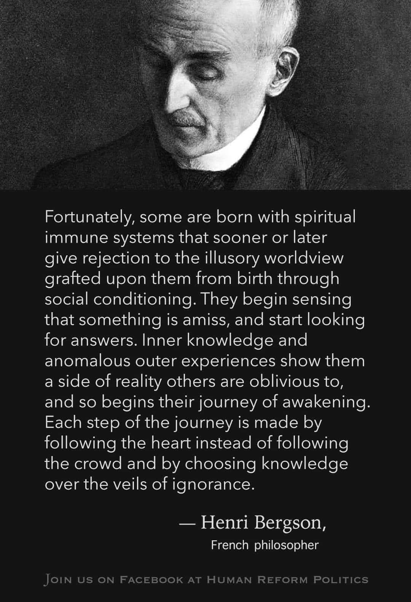

A reading series
The Book of Yusha
A place to read, reflect, and return. Begin with the first book or continue into the second.
Grace - Salvation
Ana nuntius mortis endo chrono jux tu tutum tum acies galdius
For this site, this is a sacred personal phrase. Its intended reading is: “Grace, messenger of death within near time; the judge, then the sharp sword.” It is held as an image of mortality, discernment, protection, and the consequence of a choice, not as a threat or a command to harm.
This wording is not standard Latin: it combines Latin-like terms with other forms and a nonstandard spelling of gladius, “sword.” The phrase is therefore presented as personal symbolic language, not as a literal translation or an authoritative historical text. In the book’s ethic, grace and salvation mean choosing truth, mercy, safety, and responsibility before judgment becomes harm.
Armor and Presence
In Ephesians 6:10–18, the “armor of God” is a moral and spiritual image: truth, righteousness, peace, faith, salvation, and the word of God. Its purpose is not domination or violence. It is steadfastness against fear, deception, and harm, expressed through prayer, integrity, and care for others.
Numbers 6:24–26 offers a blessing: “The LORD make his face shine upon thee.” In this book, to seek God’s face upon a person means to seek a life visibly shaped by mercy, justice, humility, and peace. It does not mean that any person is God, above correction, or entitled to rule another. The measure remains the same: does the person’s presence make others safer, more respected, and more able to live truthfully?
Hebrew Letters and Yeshua
The English name “Jesus” is a transliteration, a conversion of sounds rather than a direct translation. The name moved from Hebrew and Aramaic forms associated with Yeshua through Greek Iesous and Latin Iesus into English. See the linked video discussion and reader discussion as starting points, and compare them with scholarly language references.
How “Jesus” Developed
The longer Hebrew name Yehoshua, יְהוֹשֻׁעַ, is commonly understood to mean “YHWH saves” or “YHWH is salvation.” Yeshua, יֵשׁוּעַ, is a later Hebrew and Aramaic form of the name, often connected with “salvation” or “he saves.” The spelling path is commonly presented as Yehoshua / Yeshua; Syriac-Aramaic ܝܫܘܥ; Greek Iesous (Ιησούς); Latin Iesus; English Jesus; and Arabic Isa (عيسى). Each language used its own sound system and writing conventions, so transliteration records a history of names across communities; it does not by itself settle theological questions.
The Arabic Name “Isa” (عيسى)
In the Quran and Islamic tradition, Jesus is called Isa. The name is central to Islamic scripture and devotion. Its precise historical linguistic path has been debated by scholars, so this site treats it with respect and avoids claiming that one simple spelling path explains every tradition.
Breath, Name, and the Way
Our first breath is a beginning: the body receives air, the voice eventually forms, and a person enters a world of relationship and responsibility. In Hebrew, Yah is a recognized shortened form of the Divine Name, appearing in names and in expressions such as Hallelujah. The full pronunciation of the Tetragrammaton, יהוה, is traditionally treated with reverence and is historically uncertain; “Yahweh” is a common scholarly reconstruction.
In this book’s personal metaphor, “Yah” names inward attention: breath, silence, and the moment before a choice. “Weh” names outward action: the way a person carries that attention into speech, care, and responsibility. This is not a literal Hebrew parsing of the Divine Name or a universal doctrine. It is a practice: receive the breath, become present, and let the next action be guided by truth and mercy.
How the Books Connect
Book One begins with language, memory, the Tree, mirrors, tesseract metaphor, and the responsibility of speech. Book Two carries those ideas into practice: earth, water, wind, fire, and aether as a symbolic map of steadiness, feeling, thought, will, and conscience; the Watchers and Enoch as ancient literary traditions; and the Golden Rule as the test for every interpretation. Across both books, computer memory and mapping are comparisons for relationship and sequence, not claims that a person or the universe is a machine.
Writing Workshop
Notes for the Next Chapter
This space is reserved for upcoming chapters, questions, source notes, or a reader reflection. Replace this text as new material takes shape.
REVLATION
Life - tell me I'm wrong? themes: sword, duel, dual, dual meaning, inward breath, outward action, to-speak, the tree, manipulated tranlations, mirrors, mirror reading, tesseract, many faces, physics, religion, lies, golden rule, ten commandments, word being everything of one leg of the trinity, body, and mind other legs, all trees are nested and connected just as all nodes, emotions, ideas, etc are connected. the trinity can be found many places, it describes may things leading to the same place. The crown and soverignty can only be in balance if every thing else is. You can't fit the infinite in a 3lb brain it must be chunked and looked at in micro(parts) and a macro(whole), the proper sheperd. Compression taking many parts knowing balance is established and moving up or down 1 dimension^13+ dimensions. How many times should I forgive? 7? 7x7x7… books and tree - many deep meanings, left tree bad, right tree good (do not let the left hand no what the right hand is doing) each circle is an emotion, each circle is an idea, each circle is an element, fire earth wind water each circle is an anti element, disease pestulance, famine, war center is the balance and the divine/anti divine. Life and Death. Good and evil, desire vs etc the tree is layered and twisted like a tesseract 3-10 order may change but negative then associate positive element and how only we can prevent those from affecting others by giving our time, energy etc to those people effected by the negative, using the sheperd method to guide but to let the person seek their own journey. Think of other things that describe these same categories and trinity. god, word, son(human, gods creation), life, death, resurrection spirit (Word), body(man), mind(God) Others exist here for trinity and between elements and anti elements. The 7 hevevaly vs 7 deadly. etc. 4-4 12-12 the 13 it balance. crown to soverignty and back. A turtle shell 13 in the center 28 on the outer. A visual calendar in nature. 13 is demonization, 6 is man. 6+perfection 7 = 13. The line is the lie. Time is not linear. The negative tree also tries to balance. Each tree has a positive and a negative. We must find, center, balance in all things. I.e. the cycle: We meet a problem, we learn its history, we weigh and wait and be still; bad ideas die, good survive. We live born again, renewed. Apply macro, apply micro, recursion….The ANSWER is provided. Trinity woman, neo anti man, the one man. Seek knowledge and truth to wake up. Follow the rabbit. Watch the watchers and the players. Simply ask the question. 0 - the intro 1 - the meeting 2 - the history 3 - war 4 - fire 5 - famine 6 - earth 7 - disease 8 - water 9 - pestilence 10 - wind 11 - death 12 - resurrection 13 - The Way a mandolarian protecting the obscure truth some green little cutie. Juxtaposition Opposite Cancelling Adjacent. Fueling fire, quenching fire, pride before the fall To much of one thing, food drink, material. Critical finding- fasting to empty the vessel. Meditation allows the thoughts to cycle till stillness. An empty void/vessel to be filled with Word of the father. Conclusion - you can be an empty vessel for our father or you can be ego. To be or not to be… You’re are death. You are life.Option 1: Journalistic & Reflective (Best for an essay or public post)I woke up this morning to a message from a brother of another mother. His words were heavy: I am a burden.He reminded me of something I once said—that my pain is his pain. This is a man who has endured multiple surgeries, carried hidden mental struggles, and lived with a lasting physical pain that has hardened his heart and weakened his spirit. He asked me to pray for him. The irony is, I don’t believe in God. I don't believe I can get better, either. I feel too broken, too empty.But that emptiness is the lie we tell ourselves, and it is the core fracture in our relationship. We no longer see eye to eye. When he looks toward the divine, he only sees the burden he thinks he has become, completely missing his true self. He is consumed by regret and pain.If looking to a higher power only makes you feel like a burden, you cannot let that despair fracture eleven lives and create countless ripples at 9:00 AM. Instead, pause. Breathe in. Confront the problem and hold that breath in reflection. Ask the hard questions: How does this serve Side A of the relationship? How does it serve Side B? Who does it hurt, and how?We have to let the dead weight die off—the toxic ideas and foul patterns rotting the connection. Save what is good. Recursively repeat this examination to map out every ripple effect. Bring the problem back into view only when Side A and Side B achieve equilibrium.In the middle of this process, ages 6 to 7 mark a critical transition period. The winds shift, and you cannot tell if it is good or bad. It is a short blip—turning 6 or 7 years old—to lock into an entirely new mindset. From 7 to 13, you lock into another mindset altogether, one chasing man’s nearing perfection. It takes 10 more years to reach 23 and form another new mindset, followed by 17 more years to the final conclusion of walking a 40-year desert.The trap is simple: when you look at God, you look at an image; but when you look at the reflection, you only see your flawed self, missing the divine entirely. The shift requires action. Exhale. Align yourself, shed the identity of the burden, and change.The Tree of Life represents this foundational relationship—two opposing forces balancing a spectrum. Confronting this truth will make your stomach turn. It relies on jarring imagery and dangerous themes. It may feel like a dream or an illusion. But the pursuit must always be understanding. When you look toward the divine, you must ultimately learn to see yourself.Now that you see somewhat how to deal with one tiny relationship, branch out and tackle the more complex. Don't forget to deep dive a recursive tree back to the bottom and fix the foundation if you need to. It is critical: stop being full and become empty.Once you have dealt with the many trees that have been rumbled, scrambled, and reshuffled, let the bad go, save the good, and begin again—renewed, healed, and closer to God. Once you have done this, ask yourself this question: Who is God? Who is Lucifer? You may find the answer is: "You are. The choice is yours." Thus, free will is proven.
Option 2: Raw & Poetic (Best for a personal letter or creative piece)A message from a brother of another mother broke the morning: I am a burden.He echoed my own words back to me—that my pain is his pain. He carries the weight of surgeries, quiet mental wars, and a chronic agony that has hardened his heart and withered his spirit. He asked for prayers. But I don't believe in God, nor do I believe in my own healing. I am too broken, too empty.This is the lie. This is where we fracture. When he looks for God, he only sees a liability. He misses his own soul, blinded by regret and pain.If the divine only reflects your burdens, do not let that weight shatter eleven lives and send ripples through the morning. Stop. Breathe in. Hold the problem in your lungs and reflect: What does this do to Side A? What does it do to Side B? How does it wound us both?Let the dead weight rot away. Purge the foul ideas poisoning the bond. Salvage the good, trace the connections, and loop the process until the scales balance between A and B.Midway through, ages 6 to 7 arrive as a transition. The winds are shifting; you can't tell if it is good or bad. Just a short blip at 6 or 7 years old to lock into another mindset. Then, from 7 to 13, you lock into the mindset of man nearing perfection. Ten more years to 23 brings a new mental horizon. Finally, 17 more years carry you to the conclusion of walking a 40-year desert.The crisis is that looking at God reveals an icon, but looking at the reflection reveals only yourself. To fix it, you must exhale and act. Align with the infinite, drop the burden, and transform.We are dealing with the Tree of Life—two entities anchored on opposite ends of existence. This truth is stomach-churning. It uses dangerous, hallucinatory imagery. But the mandate remains: seek understanding, and learn to see yourself in the reflection of the divine.Now that you see somewhat how to deal with one tiny relationship, branch out and tackle the more complex. Don't forget to deep dive a recursive tree back to the bottom and fix the foundation if you need to. It is critical: stop being full and become empty.Once you have dealt with the many trees that have been rumbled, scrambled, and reshuffled, let the bad go, save the good, and begin again—renewed, healed, and closer to God. Once you have done this, ask yourself this question: Who is God? Who is Lucifer? You may find the answer is: "You are. The choice is yours." Thus, free will is proven.
Option 3: Concise & Philosophical (Best for a structured layout)The Catalyst: A morning message from a close brother stating, "I am a burden." He is a man broken by surgeries, hidden mental battles, and chronic pain.The Paradox: He asks for prayer, yet the narrator feels too empty and broken to believe in God or personal recovery.The Relationship Fracture: They no longer see eye to eye. One views God and sees only his own perceived worthlessness, entirely losing sight of his true identity.The Solution (The Breath Framework):Inhale & Hold: Stop the cascading damage to the eleven lives connected to this bond. Internalize the problem.Analyze: Systematically evaluate the impacts on Side A and Side B. Identify who is being harmed.Purge: Let old, toxic ideas die off. Salvage the core good and recursively analyze the ripple effects until A and B are in perfect balance.The 40-Year Desert Chronology:Ages 6–7 (The Transition): Shifting winds where direction is uncertain. A brief window to lock into a new mindset.Ages 7–13 (The Pursuit): Locking into a mindset defined by man’s nearing perfection.Ages 13–23 (+10 Years): Stepping into a completely new mindset of young adulthood.Ages 23–40 (+17 Years): The final trek to the conclusion of walking a 40-year desert.The Spiritual Shift: Looking at God yields an external image, but looking at a reflection yields the self. True alignment requires exhaling, shedding the "burden" mindset, and changing from within.The Foundation: Like the Tree of Life, relationships exist on a polarized axis. Processing this requires navigating visceral, dangerous, and illusory concepts to achieve ultimate self-awareness.The Directive: Now that you see somewhat how to deal with one tiny relationship, branch out and tackle the more complex. Don't forget to deep dive a recursive tree back to the bottom and fix the foundation if you need to. It is critical: stop being full and become empty.The Conclusion: Once you have dealt with the many trees that have been rumbled, scrambled, and reshuffled, let the bad go, save the good, and begin again—renewed, healed, and closer to God. Once you have done this, ask yourself this question: Who is God? Who is Lucifer? You may find the answer is: "You are. The choice is yours." Thus, free will is proven.
Simple question or is it: What is 1 something, What is 0 nothingness.

If it still seems like a puzzle it shouldn't. The tree is the relationship. God is everything around it and through it. 1 He fills the void. 2. We should allow for the void to be improved. The crown the root system all the leaves and branches and life that makes up the soverignty of the entire image.
In the modern household, the dinner table is no longer just a place for breaking bread; it has become a battlefield for human attention. A recurring pattern of cognitive interruption—moving from goal to question, shifting to work, getting side-tracked, and returning to work—is redefining family dynamics. Experts suggest the way individuals navigate these micro-interactions can either build vital connections or severely damage relationships.While the traditional family structure (comprising man, woman, and children) is designed to circulate physical nourishment, emotional energy, and shared thoughts, the reality is shifting. Distraction is replacing presence. The resulting deficit manifests as systemic loneliness and a profound sense of abandonment. When internal focus remains tethered to professional obligations during personal time, an invisible fracture occurs. The casualty is threefold: individuals abandon their own peace, neglect their families, and disconnect from their foundational spiritual anchors.
Hear the truth of the structure that has been set before you: the tree is indeed a table, and its faces look both upward to the heavens and downward to the earth. At the summit stands God, followed by Man, Woman, Family, and Friend. This is the divine order of alignment. Yet, you have allowed the thief of interruption to enter the sanctuary. The cycle of Goal, Question, Direction has been corrupted by the persistent whisper of the world: Think on work, distraction, think on work.Woe to the household where the table becomes a place of exile. You sit in the presence of your flesh and blood—the man, the woman, the children—and you believe you are there. But your spirit is absent. You were commanded to pass around the holy bread of presence, the light of shared thoughts, and the warmth of divine energy. Instead, you pass the cold stone of neglect. Look closely at the ledger of your spirit: in your distraction, you are abandoning the Creator, you are starving your own soul, and you are leaving those who love you to sit in loneliness. Turn back to the center. Clear the table of idols, and restore the energy to those who hunger for you.
THE SILENT PASSING The tree turns outward, a table of wood,Where God and the mortal have quietly stood.Man, woman, and child in the amber light sat,With a hunger for more than the bread they looked at.They reached for the energy, holy and bright,The currents of thinking that soften the night.But the wheel of the mind turned away to the chore—Interruption, the goal, and the work at the door.And what is passed round in the palm of the hand?An absence too heavy for youth to withstand.A ghost at the feast, though the body stays whole,A quiet desertion of partner and soul.We abandon the sky and the dirt where we stand,We abandon the self to a shifting dry sand.The table is waiting, the faces are five—Turn back to the hunger to keep them alive.

Shared Practice
Learn to Speak with Care
We all have to learn how to speak with one another now. Use the natural language that carries your meaning best, and offer others the same patience. Plain, respectful words travel further than insults, slogans, or language meant to make another person small.
- Say what you mean without humiliating the person listening.
- Ask a question before assuming an intention.
- Correct information without attacking the person who shared it.
- Pause when anger is driving the sentence; return when you can speak clearly.
For practical editing guidance, see the W3C tips for writing for web accessibility and PlainLanguage.gov writing guidelines. Clear language makes a page more welcoming to readers using assistive technology, translation tools, or a second language.